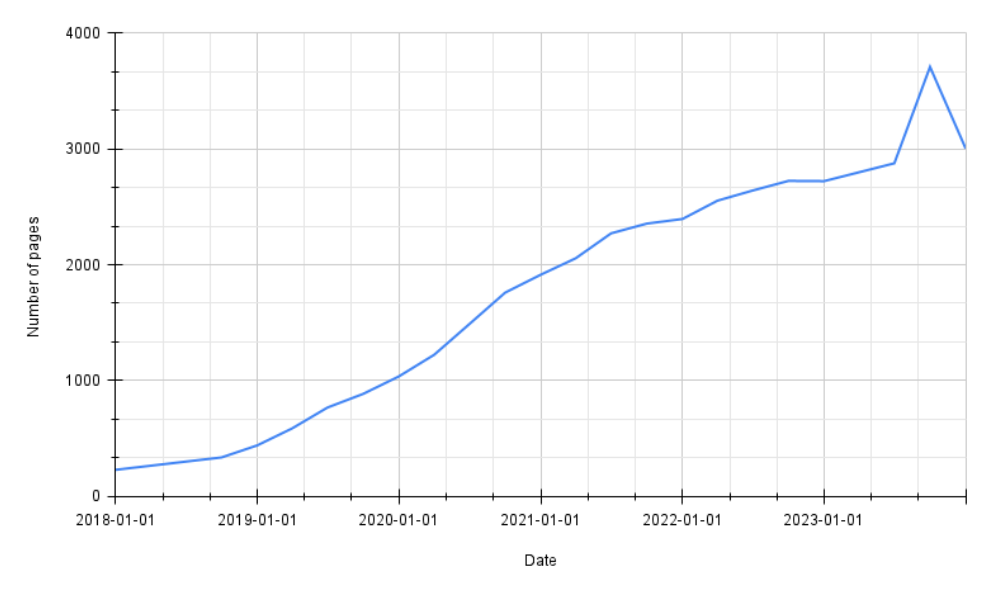
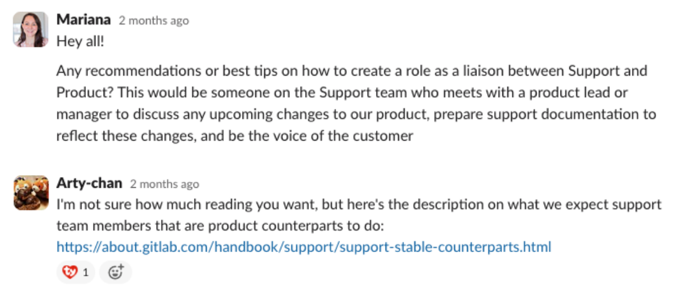
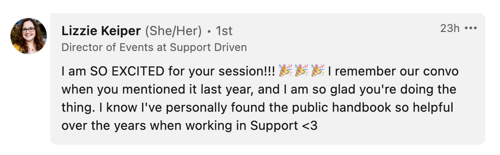

Giving back to the community through transparency and a public handbook
Cynthia Ng
@TheRealArty
May 16, 2024
About me
- Documentarian
- Blogger
- (Former) Web developer
- Current GitLab handbook "owner"
 Tambako The Jaguar. (2011). A couple of relaxed pigs. Flickr. https://flic.kr/p/arqcdX CC BY-ND 2.0
Tambako The Jaguar. (2011). A couple of relaxed pigs. Flickr. https://flic.kr/p/arqcdX CC BY-ND 2.0
Answer these questions
- Do you have processes that need to be followed?
- Do you have shared workflows with other teams?
- Do you have information that you frequently share?
- Do you have people from other organizations ask how you do things?
A handbook: What and why
What is a handbook?
A handbook is a type of reference work, or other collection of instructions, that is intended to provide ready reference.
The handbook is the central repository for how we run the company.- GitLab
Why a handbook?
- “Shared reality” with a Single Source of Truth (SSoT)
- Low-context communication
- Documented workflows promote
- measurement clarity
- results standardization
- worker autonomy
- efficient onboarding / inclusivity
- continuous improvement
- operational scalability
Creating a handbook
What you need
- Buy-in
- Location / Version controlled tool
- Easy (enough) to use
- Reinforcement
- Public by default (separate internal only)
- Start small and iterate
GitLab handbook pages

Source: https://handbook.gitlab.com/handbook/about/#count-handbook-pagesSet expectations to encourage contributions
Encouraging contributions
- Invite collaboration on changes
- Have guidelines on what level of review is required
- Have clear guidelines on internal-only information
- Example: SAFE framework
- Doesn't need to be perfect, Not "set in stone"
Why a public handbook?
For the same reasons!
Why a public handbook?
- Efficiency

Source: Support Driven Slack: #leadership. Used with permission.Why a public handbook?
- Efficiency
- Consistency
- Collaboration
- Operational transparency
when people see the work going on behind the scenes, they value the service more.Harvard Business Review, March-April 2019. https://hbr.org/2019/03/operational-transparency- Ryan Buell on Operational Transparency
Why a public handbook?
- Efficiency
- Consistency
- Collaboration
- Operational transparency
- Community resource

Source: LinkedIn postWhy a public handbook?
- Efficiency
- Consistency
- Collaboration
- Operational transparency
- Community resource
- Data source
Take Away
A public handbook
is a way to give back
Other ways to share
- Write publicly
- Blog
- Article
- Newsletter
- Make resources public
- LibraryToolshed.ca
Thanks!
- Cynthia "Arty" Ng
- artychan@mastodon.social
- about.me/cynthiang